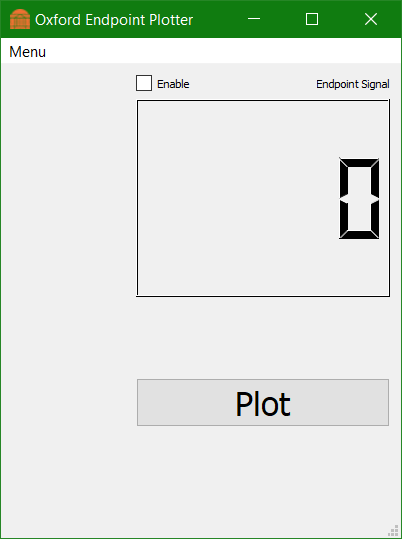
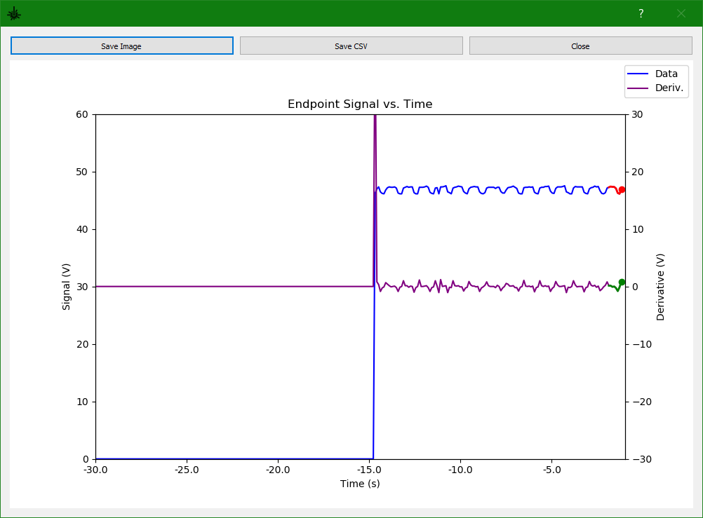
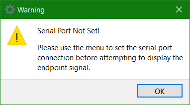
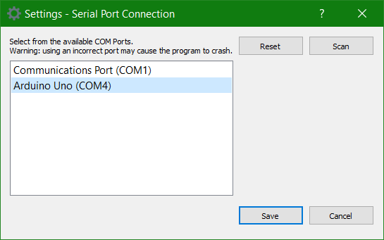
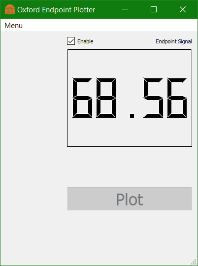
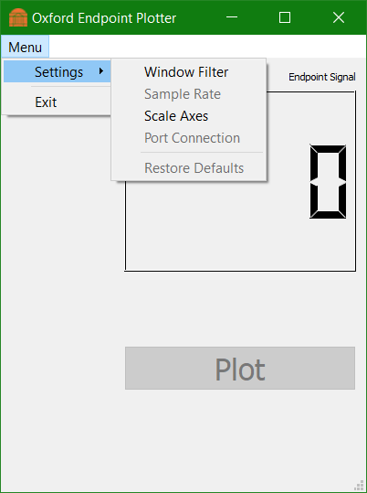

Manual¶
Once you have started the program, the main window will open and should look like this:
To open the plot, all you need to do is click the big ‘Plot’ button. Once open, the animation will look something like this:
You can save the current plot picture as an image, or save all recorded data to a csv file. This will only record the raw data (not the filtered data or the derivative); however, you can calculate those easily from the raw data. If you get the following warning message:
You will need to set the serial port before you can do anything else. This is to stop the program from running without a valid serial port to connect to. Note: If the program crashes, the most likely cause is the serial port connection. Double check that it exists and there aren’t any active connections to it already. To set the serial port, click Menu > Settings > Port Connection. The following dialog will open:
Select the appropriate serial port. In this case it’s going to be whichever port shows the embedded arduino microcontroller. To clear your selection, click on the ‘Reset’ button. If you wish to rescan the system’s available serial ports, click ‘Scan’. To save your selection, click on the save button. The warning dialog will no longer appear.
If you want to display the raw voltage without the plot, you can hit the ‘Enable’ checkbox on the main menu. The program will then poll the ADC and update the LCD every 1s. The live plot and LCD can not run at the same time. We are limited to one serial connection to the ADC at a time. Be patient when you click the checkbox, the program halts for 2s to make sure the serial connection is initialized and ready.
While the plot is not open, you may alter any of the settings from the menu. They should be pretty self-explanatory. If the user inputs an invalid value, nothing will happen.
If the plot is open, the user may still alter a few settings dynamically: the window filter and the axes limits. To do this, move the plot window so you can see both the plot and the main window. Then alter the settings you wish to change and save.
